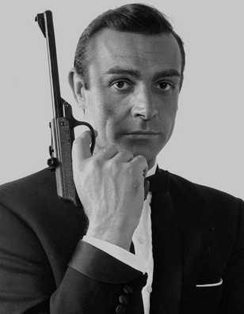

Sean Connery
Sean Connery was the first actor to bring Ian Fleming's James Bond to the movie screen. Born in a working-class neighbourhood of Edinburgh, Connery joined the Navy at an early age and afterwards worked as a bricklayer, lifeguard and French polisher. In his spare time he enjoyed bodybuilding. This hobby led to modelling and small theatrical parts that included training with Swedish dancer Yat Malmgren. These experiences instilled in him the masculine grace and air of confidence that producers Albert R. Broccoli and Harry Saltzman were looking for in their 007, Connery received a Lifetime Achievement award at the 1996 Golden Globes and a knighthood in 2000 among many other tributes.
Thomas Sean Connery was born on August 25, 1930 in Fountainbridge, Edinburgh. His mother, Euphamia C. Maclean, was a cleaning lady, and his father, Joseph Connery, was a factory worker and truck driver. He also has a brother named Neil Connery, who works as a plasterer in Edinburgh. Before going into acting, Sean had many different jobs, such as a Milkman, lorry driver, a laborer, artist's model for the Edinburgh College of Art, coffin polisher and bodybuilder. He also joined the Royal Navy, but was later discharged because of medical problems. At the age of 23, he had a choice between becoming a professional footballer or an actor, and even though he showed much promise in the sport, he chose acting and said it was one of his more intelligent moves.